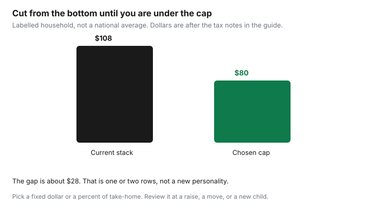

Subscriptions · Canada
Set a Household Subscription Budget Cap in Canada (and Stick to It)
Each subscription looks small on its own. Together they are a bill with no due date and no landlord. A cap is a number you can see: a fixed dollar amount, or a percent of take-home, applied to digital plans, the gym, and the boxes. Internet, the phone plan, and insurance are not in this cap. They have their own guides. This cap is the quiet recurring stuff the audit already listed.
Disclosure: Budget apps are an offer type. Saving Optimizer may earn a commission if we later add a partner link. We do not currently claim a budgeting-app partnership. A spreadsheet is enough. Education only. Not a spending rule for your income.
Key takeaways
- Add digital plans, the gym, and boxes in CAD after the tax on each receipt.
- Pick a fixed dollar cap or a percent of take-home. Adjust it for your income. There is no national percent that fits every household.
- Rank by joy per dollar and by use in the last 30 days. Cut from the bottom until the total is under the cap.
- One in, one out. A new row replaces a cancel.
- Review the cap at a raise, a move, or a new child, and in the January bill hour.
Total all recurring digital + gym + box subscriptions in CAD after tax
Export 90 days, the same window as the hidden-charge guide. Include streaming, cloud, Microsoft 365, Prime, app-store renewals, the gym draft, meal-kit weeks you did not skip, and subscription boxes. Exclude rent, groceries that are not a subscription, the internet plan, the mobile plan, and insurance premiums. Those are large on purpose. Mixing them into this cap hides the creep.
Use the amount that left the account, or the checkout total, not the pre-tax badge. A labelled stack, so the method is visible, not a survey of Canada:
| Row | Before tax | Amount used in the stack |
|---|---|---|
| Netflix Standard with ads | $7.99 | $9.03 after 13 percent |
| Disney+ Standard With Ads, if kept all month | $8.99 | $10.16 after 13 percent |
| Prime monthly | $9.99 | $11.29 after 13 percent |
| iCloud+ 200 GB | $3.99 | $4.51 after 13 percent |
| Microsoft 365 Personal | $11.50 | $13.00 after 13 percent |
| Gym draft, labelled | n/a | $60 already the bank amount |
| Stack | $107.99, about $108 |
Netflix and Disney+ prices are the ones checked 24 Sep 2026 on the rotation guide. Prime is the fee page used the same day. iCloud 200 GB is Apple’s Canada table published 16 Sep 2026. Microsoft Personal is the Canada store page fetched 25 Sep 2026. Your province’s tax is not this 13 percent. Apple’s Canada table does not carry the “tax included” marker used for some other countries, so confirm the upgrade screen. If the gym receipt already includes tax, do not add HST again. Meal-kit charges belong in the total for the weeks you paid. The comparison with a grocery shop stays on the meal-kit guide. Costco membership is a warehouse decision on the Costco guide, not a streaming row.
Pick a cap (fixed dollar or percent of take-home)—adjust for your income
Two ways to pick the number. A fixed dollar cap is easier to defend at the kitchen table: “subscriptions, the gym, and boxes stay under $80 a month after tax.” A percent of take-home moves when income moves. A labelled example, not advice: take-home of $5,000 and a 1.5 percent cap is $75. Take-home of $3,200 and the same 1.5 percent is $48. Someone earning more can choose a higher dollar cap and still be choosing, not drifting. Someone earning less should not copy a dollar they saw in a forum.
There is no correct Canadian percent in a statute. One percent will feel tight in a city household that treats a gym as non-negotiable. Three percent will feel loose if the only goal is to stop unused apps. Write the sentence in the sheet: “Cap is $80 after tax, or 1.5 percent of take-home, whichever we wrote down this year.” Pick one method and keep it until the review. Do not switch methods in the month you want a new app, because that is how the cap moves without a decision.

Rank by joy-per-dollar and usage in the last 30 days
Give each row two scores from the people who use it. Usage in the last 30 days: yes or no, the same test as the audit. Joy: 1 to 5, said out loud, not averaged into a decimal nobody believes. Joy per dollar is the joy score divided by the monthly after-tax cost. A $9 streamer at joy 4 is 0.44. A $60 gym at joy 2 is 0.03. The gym can still stay if it is the household’s health plan and you change the cap to admit it on purpose. The score stops you from calling every charge “basically free.”
A row with no use in 30 days goes to the bottom regardless of an old joy score. Disney+ during a named series can score high for one month and then drop. That is seasonal, and it stays monthly, on the prepay rules and the rotation. Do not give a high joy score to a service nobody opened because the trailer looked good.
Cut from the bottom until you are under the cap
Sort the sheet by joy per dollar, lowest first. Cancel from the top of that sorted list until the after-tax total is at or under the cap. In the labelled stack, $108 against an $80 cap is about $28 to remove. Disney+ at $10.16 and Prime at $11.29 are $21.45 together. A further trim, or a cheaper Netflix tier you already priced, closes a gap of that size. Cancelling the $60 gym would also do it, and it would be the wrong cut if the gym is the row you actually use. The order is the point. You are not hunting the largest number. You are removing the weakest number until the ceiling holds.
Cancel where you are billed. Carrier streaming lines have their own path on the Rogers and Bell guide. Adobe’s early fee can make a mid-year cancel more expensive than finishing the term. Run that arithmetic on the Adobe guide before you cut it to hit a cap. A GoodLife buyout that exceeds the dues left is not a saving. The GoodLife guide is the comparison. Ontario’s 10-day cooling-off, if you are still inside it, is a cleaner exit than a buyout, on the rights guide.
One-in-one-out rule for any new subscription
The audit’s rule stays in force after the cap exists. A new subscription requires a cancel of at least the same after-tax dollars, in the same month, before the trial converts. “We are $6 under the cap, so this $8 trial is fine” is how the cap dies. If the new row is smaller than the cap gap and you still want the rule, cancel something anyway or wait. Waiting is free.
Trials follow the checklist: screenshot the price on day 0, one trial at a time, cancel Apple at least 24 hours early. A trial that fits under the cap is still a trial. The cap is not permission to collect logos.
Review the cap at each raise, move, or new child
A raise can fund a higher cap or a higher savings transfer. Choose in writing. Leaving the cap unchanged while income rises is a valid choice. Quietly adding three apps because the paycheque is larger is not a review. A move changes the gym, the internet, and sometimes the streaming bundle on the old address. Rebuild the stack in the new city before you copy the old cap. Rogers’ streaming terms say apps can pause during a move of home services. Check the bill at the new address so a paused add-on does not look like a cancelled one.
A new child changes joy scores more than it changes prices: a library card and one seasonal Disney+ month may replace three unused adult apps, or the opposite. Re-score. Do the review in the January hour on the renewal calendar, and again when one of these three events happens. If the new total is over the cap, cut before the next renewal, not after a year of “temporary.”
Sources & date stamps
- Labelled stack uses Netflix and Disney+ ad-tier prices checked 24 Sep 2026, Prime $9.99 from the fee page used 24 Sep 2026, iCloud+ 200 GB at $3.99 from Apple’s Canada table published 16 Sep 2026, and Microsoft 365 Personal at $11.50 from the Canada store page fetched 25 Sep 2026.
- Ontario 13 percent is an illustration on the digital lines only. The $60 gym figure is labelled, not a club price. The $80 cap and the 1.5 percent examples are choices, not a standard.
- Companion guides supply Adobe’s 50 percent fee, GoodLife notice and buyout handling, and Ontario’s 10-day gym cooling-off. They are cited so a cap cut does not ignore an exit fee.
Frequently asked questions
Does the cap include my internet bill?
No. This cap is digital subscriptions, the gym, and boxes. Internet, the mobile plan, and insurance have their own decisions and would hide the smaller charges.
What percent of take-home should I use?
There is no required percent. A labelled 1.5 percent of $5,000 take-home is $75. The same percent of $3,200 is $48. Write a number that fits your income and keep it until you review it.
Should I cancel the most expensive row first?
Cancel the lowest joy per dollar, after you mark anything unused in the last 30 days. A large gym you use can stay. A cheap app you do not open should go.
Can I add a service if I am still under the cap?
Use one-in-one-out anyway. A gap under the cap is not a reason to fill it. If you add a row, cancel at least the same after-tax dollars in the same month.
Do I need a budget app to do this?
No. A spreadsheet holds the rows, the tax, and the cap. A budget app is an offer type if you want one later. It is not a step.